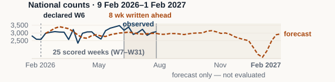
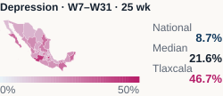

WCP 2026 · E-Poster 3134 · AS17 Digital Psychiatry
Pronóstico de notificaciones neuropsiquiátricas para apoyar la planeación
Evaluación actualizada, opción 9. Los resultados siguientes no son las métricas de validación cruzada del abstract de marzo.
Método y alcance
Estudio retrospectivo con datos públicos del SINAVE de diciembre de 2013 a enero de 2026. Se compararon Prophet, DeepAR, ensemble y stacking mediante validación cruzada con ventana creciente, con una selección por serie.
El estudio abarca 333 series. La evaluación del snapshot cubre 297: nacional y 32 entidades, por sexo y padecimiento; excluye cuatro regiones. General y las series por sexo proceden de columnas diferentes del boletín y no deben sumarse como una partición.
En los resultados nacionales, W7–W31 son 25 semanas posteriores al corte declarado. Sólo W24–W31 (ocho semanas) estaban por delante de la fecha declarada del archivo, 5 de junio de 2026. Esta fecha no constituye una certificación criptográfica temporal. El corte de DeepAR está declarado, no verificado en el artefacto. El mapa estatal es una comparación descriptiva, no una prueba enteramente prospectiva de todos los motores.
Resultados nacionales: ambas ventanas
| Padecimiento | sMAPE 25 sem | sMAPE 8 sem | Observado 25 sem | Pronóstico 25 sem | Desviación acumulada |
|---|---|---|---|---|---|
| Alzheimer | 14.4% | 17.8% | 1,100 | 1,046 | -4.9% |
| Depresion | 8.7% | 5.0% | 75,859 | 74,675 | -1.6% |
| Parkinson | 10.6% | 6.7% | 3,832 | 3,748 | -2.2% |
sMAPE: error porcentual absoluto medio simétrico; menor es mejor. La desviación acumulada compara totales y no equivale al error semanal ni a un porcentaje de precisión.

Horizonte de 52 fechas: 9 de febrero de 2026 a 1 de febrero de 2027, en calendario de boletín. El tramo futuro no está evaluado.
Mapa: modelos seleccionados por estado
Depresión, W7–W31: mediana estatal 21.6%; máximo Tlaxcala 46.7%; nacional 8.7%. Puebla es 20.6%. Se corrige el mapa anterior, que mostraba DeepAR en todos los estados sin identificar ese alcance.

Conclusiones y límites
Los resultados apoyan la planeación a escala nacional; el resultado nacional no sustituye al desempeño local. Son notificaciones, no incidencia verdadera. No se evaluaron desenlaces clínicos, ahorro ni efectos sobre asignación de recursos.
EDIT: análisis por sexo; etapa vital no evaluada; datos públicos abiertos; contexto México, sin validación intercultural.
No hubo financiamiento. Se usan datos agregados y públicos, sin identificadores individuales. Esta página no afirma una exención o aprobación de comité no documentada.
Materiales y reproducibilidad
- Póster EN (PDF)
- Póster ES (PDF)
- Cifras nacionales y estatales, con motor seleccionado (CSV)
- Cifras, definición de ventanas y hashes de las fuentes (JSON)
- Código del recálculo (requiere entorno y CSV del proyecto)
- Organización del proyecto y código
Autores: Javier Augusto Rebull Saucedo; Juan Carlos Pérez Nava; Luis Gerardo Sánchez Salazar; Grettel Barceló Alonso; Lina Díaz Castro; Silvia Magali Cuadra Hernández; Ruth Manuela Pérez Hernández.
Contacto: rebull@outlook.com